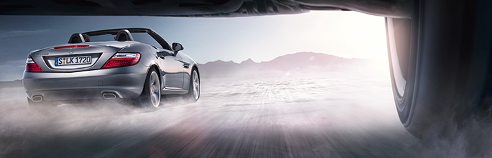

მერსედესის ტექნიკური დათვალიერება
უსაფრთხოება თქვენი მერსედესისთვის.
უსაფრთხოების ერთ-ერთ ძირითად პირობას წარმოადგენს მერსედესის ტექნიკური მომსახურების სისტემა. როცა თქვენი ავტომობილის ტექნიკური დათვალიერება რეგულარულად ტარდება, არამარტო ინარჩუნებთ მას საუკეთესო ტექნიკურ ფორმაში, არამედ პირველ რიგში ზრუნავთ თქვენს საკუთარ უსფრთხოებაზე. მერსედესის ცენტრში ტექნიკური დათვალიერება ხდება უმაღლეს დონეზე, რადგან მისმა შემქმნელებმა ეს ყველაზე უკეთ იციან. შესაძლო ცვეთა ან შესაძლო დაზიანება უმჯობესია გამოიცნოთ ადრეულ სტადიაზე. რადგან, აიცილოთ თავიდან ძვირადღირებული სარემონტო პროცესი.
საბურავის წნევის კონტროლი
მერსედეს-ბენცის საბურავის წნევის მაკონტროლებელი სისტემა საშუალებას გაძლევთ გზის საფარის ნებისმიერ ზედაპირზე თავი დამშვიდებულად იგრძნოთ.საბურავის წნევის მნიშვნელობას ზოგჯერ სათანადოდ ვერ აფასებენ. საბურავში ჰაერის უმნიშვნელო რაოდენობის მეტებას ან ნაკლებობას შეიძლება მოყვეს საჭის არასწორი მოქმედება, დაარღვიოს ავტომობილის სტაბილურობა და დააზიანოს ან გაცვითოს სხვადასხვა დეტალები.მერსედეს-ბენცის საბურავის წნევის მაკონტროლებელი სისტემა თქვენს მულტი ფუნქციურ ეკრანზე არსებულ მნიშვნელის საშუალებით ყოველთვის გატყობინებთ წნევის ცვლილებას.ამით აგაცილებთ ბევრ სახიფათო სიტუაციას და დეტალების დაზიანებას.
მერსედესის სერვის
მერსედეს-ბენცის სერვის ცენტრი არჭურვილია თანამედროვე დიაგნოსტიკური და მექანიკური დანადგარებით, იგი სრულიად შეესაბამება ყველა თანამედროვე ტექნიკურ სტანდარტსა და მოთხოვნას, რაც ბევრად აადვილებს ჩასატარებელი სამუშაოების შესრულებას. ჩვენი მიზანია შემოგთავაზოთ მერსედეს-ბენცის ორიგინალი სათადარიგო ნაწილები და მაღალი ხარისხის სერვისი.